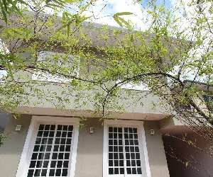
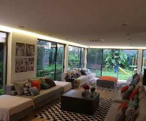
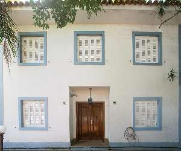
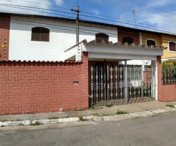
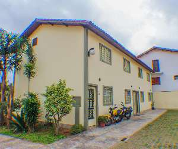

Esse lindo sobrado, com reforma atualizada, sistema de energia solar e de segurança moderno, sala com vários ambientes e ar condicionado ,com espetacular claridade, e ainda para aquecer na temporada de inverno tem uma lareira , sala de almoço, lavabo, cozinha planejada moderna com cooktop, pia e bancada em granito , armários de primeira qualidade, ao cozinhar nela não será mais um serviço, e sim um modo de amar quem nela está! No piso superior 3 quartos espaçosos com armários e ar concionado ,sendo a suíte banheiro ele e ela. Na área de serviço com dois dormitórios e um banheiro. Garagem para quatros carros, agora vem o melhor, é desfrutar desse quintal com árvores frutíferas, grama ,terra...com uma bela churrasqueira, é para poucos.
Valor de Aluguel R$7.500,00

CASA NOVA, DESLUMBRANTE! RUA COM SEGURANÇA 24H . Muita iluminação natural, 4 suites, 6 vagas, 560m² de construção, 580m² de Terreno. ÁREA SOCIAL: Toda envidraçada, aberta para o Jardim. Living 3 ambientes, sala com lareira, sala de jantar 2 ambientes, sala de TV, Lavabo. ÁREA INTIMA: 4 suites, suite master com 90m² : Dormitório, closet Sr e Sra, banheiro em mármore todo envidraçado aberto para o dormitório com terraço. SOLÁRIO: Cobertura da casa em deck, com vista panoramica, hidromassagem, gazebo, jardim. SEGURANÇA: Guarita com seguranças 24h, CFTV, portas e janelas de Acesso ao pavimento Superior blindadas, monitoramento 24h. ACABAMENTOS: Sala e Banheiros em Mármore Travertino Romano. INFRA ESTRUTURA: Ar Condicionado em todos os ambientes, sistema de pressurização de água e irrigação do jardim.
Valor de aluguel R$25.000,00

Casa recentemente reformada. Térreo: Hall de entrada, 1 sala ampla com 60 m² contendo lareira, sala de jantar com belo vitral, sala de televisão, escritório, lavabo, ampla cozinha e lavanderia. Garagem para dois carros com portão elétrico. Primeiro andar: Hall, Suíte, 2 quartos sendo 1 com ampla varanda , banheiro. Portão Elétrico.
Valor de Aluguel R$7.000,00

Sobrado com Jardim e churrasqueira, 3 dorm, com 1 suite, 2 vagas, excelente localização, ao lado do Extra, do aeroporto de Congonhas, vale a pena conferir.
Valor de Aluguel R$3.000,00

Sobrado totalmente em piso frio com: sala, cozinha, 2 dormitórios, banheiro, lavabo, lavanderia e quintal. Possui portão automático, interfone e antena coletiva, jardim, uma vaga de garagem.